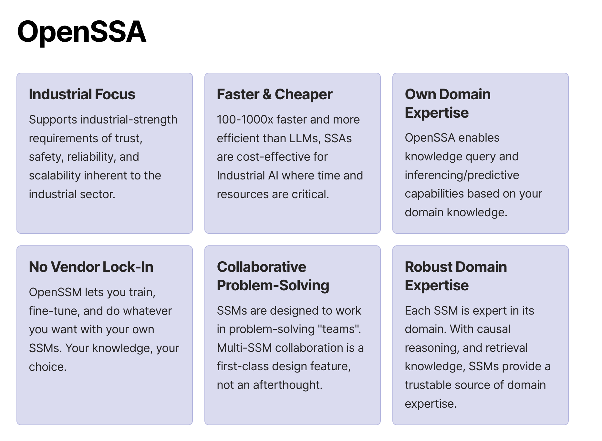

OpenSSA: Small Specialist Agents for Industrial AI¶
Documentation: aitomatic.github.io/openssa
Installation:
pip install openssa(Python 3.10-3.11)SSA Problem-Solver App Launcher (after installation by
pip install openssa[contrib]):openssa launch solver(try out the same app hosted at openssa.streamlit.app)
OpenSSA is an open-source framework for Small Specialist Agents (SSAs), problem-solving AI agents for industrial applications. Harnessing the power of human domain expertise, SSAs operate either alone or in collaborative “teams”, and can integrate with both informational and operational sensors/actuators to deliver real-world industrial AI solutions.
SSAs are light-weight, domain-focused and incorporate reasoning and planning capabilities. These characteristics make them ideal for complex hierarchical tasks typically found in industrial applications.

Small Size, Specific-Domain Specialization¶
The trend towards specialization in AI models is a clear trajectory seen by many in the field.
.. realize that smaller, cheaper, more specialized models make more sense for 99% of AI use-cases .. – Clem Delangue, Hugging Face
As predicted by Clem Delangue and others, we will see “a rich ecosystem to emerge [of] high-value, specialized AI systems.” SSAs are the central part in the architecture of these systems.
System-1 & System-2 Intelligence¶
In addition to information-retrieval and inferencing (“System-1 intelligence”) capabilities, SSAs are additionally designed with hierachical reasoning and planning (“System-2 intelligence”) capabilities. They can execute tasks following general-purpose problem-solving paradigms (such as OODA) and domain-specific expert heuristics, in order to solve a diverse variery of problems that are hard for System-1-only Large Language Models (LLMs) and traditional AI models.
System 2 thinking is often considered advantageous in certain contexts due to its deliberate, analytical nature. It excels in handling complex and novel situations, enabling individuals to engage in thoughtful reflection and make well-reasoned decisions. System 2 thinking is particularly valuable for risk assessment, mitigating impulsive judgments, and adapting mental models based on intentional learning. Moreover, it helps avoid cognitive biases and stereotypes by involving conscious, effortful processing. While System 1 thinking is valuable for quick and intuitive decision-making in familiar scenarios, System 2 thinking’s strengths lie in its ability to navigate intricate situations, analyze information thoroughly, and make informed choices that consider long-term consequences. The effectiveness of each thinking system depends on the specific demands of the task at hand, with both contributing to the overall cognitive toolkit.
SSA vs LLM¶
Unlike LLMs, which are computationally intensive and generalized, SSAs are lean, efficient, and designed specifically for individual domains. This focus makes them an optimal choice for businesses, SMEs, researchers, and developers seeking specialized and robust AI solutions for industrial applications.
Fast, Cost-Effective & Easy to Use: SSAs are 100-1000x faster and more efficient than LLMs, making them accessible and cost-effective particularly for industrial usage where time and resources are critical factors.
Industrial Focus: SSAs are developed with a specific emphasis on industrial applications, addressing the unique requirements of trustworthiness, safety, reliability, and scalability inherent to this sector.
System-1 AND System-2 Capabilities, not just System-1: On top of System-1 capabilities such as knowledge query and inferencing/prediction, SSAs have hierarchical problem-solving capabilities based on the domain-specific knowledge and expert heuristics.
Vendor Independence: OpenSSA allows everyone to build, train, and deploy their own domain-expert AI models, offering freedom from vendor lock-in and security concerns.
Target Audience¶
Our primary audience includes:
Businesses and SMEs wishing to leverage AI in their specific industrial context without relying on extensive computational resources or large vendor solutions.
AI researchers and developers keen on creating more efficient, robust, and domain-specific AI agents for industrial applications.
Open-source contributors believing in democratizing industrial AI and eager to contribute to a community-driven project focused on building and sharing specialized AI agents.
Industries with specific domain problems that can be tackled more effectively by a specialist AI agent, enhancing the reliability and trustworthiness of AI solutions in an industrial setting.
SSA Architecture¶
OpenSSA Framework Library¶

High-Level Class Diagram¶

Getting Started with OpenSSA¶
Who Are You?¶
An end-user of OpenSSA-based applications
A developer of applications or services using OpenSSA
An aspiring contributor to OpenSSA
A committer to OpenSSA
Getting Started as an End-User¶
Getting Started as a Developer¶
See some example user programs in the examples/notebooks directory. For example, the see the sample use case on ALD semiconductor knowledge, do:
% cd examples/notebooks
Common make targets for OpenSSM developers¶
See MAKEFILE for more details.
% make clean
% make build
% make rebuild
% make test
% make poetry-init
% make poetry-install
% make install # local installation of openssm
% make pypi-auth # only for maintainers
% make publish # only for maintainers
Getting Started as an Aspiring Contributor¶
OpenSSM is a community-driven initiative, and we warmly welcome contributions. Whether it’s enhancing existing models, creating new SSMs for different industrial domains, or improving our documentation, every contribution counts. See our Contribution Guide for more details.
You can begin contributing to the OpenSSM project in the contrib/ directory.
Getting Started as a Committer¶
You already know what to do.
Community¶
Join our vibrant community of AI enthusiasts, researchers, developers, and businesses who are democratizing industrial AI through SSAs. Participate in the discussions, share your ideas, or ask for help on our Community Discussions.
Contribute¶
OpenSSA is a community-driven initiative, and we warmly welcome contributions. Whether it’s enhancing existing models, creating new SSAs for different industrial domains, or improving our documentation, every contribution counts. See our Contribution Guide for more details.
License¶
OpenSSA is released under the Apache 2.0 License.
API References¶
Note: Lepton API Key¶
Head to Lepton to get your API key.
Go to
SettingsSelect
API tokensCopy
<YOUR_LEPTON_API_TOKEN>
In terminal, run
export LEPTON_API_KEY=<YOUR_LEPTON_API_TOKEN>